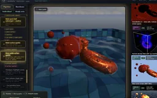
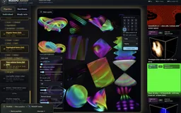
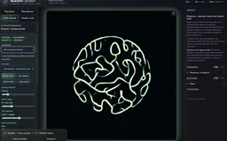
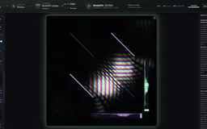
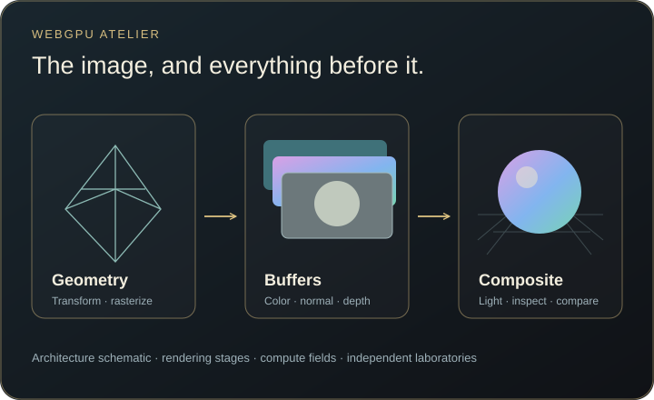

Intermediate resources stay visible
The staged renderer presents buffers and textures alongside the final scene instead of hiding them behind a completed frame.
Follow a rendered WebGPU scene through its shaders, buffers and intermediate passes, then explore laboratories spanning pure mathematics, evolving systems such as SmoothLife and reaction–diffusion, swarm dynamics, forward simulation, inverse physics and more. Quantum erasers and delayed-choice models sit alongside light transport, fluid solvers and a physical-contact Galton board: a broad collection of ideas whose internal computations remain visible.
Explore connections
Rendering and simulation become easier to assess when their intermediate representations remain visible.
Follow Pipeline, build a Barebone view, or open an Individual laboratory.
View geometry buffers, density, pressure, light lists or field amplitudes.
Adjust a solver, material or measurement control and observe the corresponding state.
Compare the image with diagnostics, model scope and meaningful work measurements.
The staged renderer presents buffers and textures alongside the final scene instead of hiding them behind a completed frame.
Explore 3D SmoothLife, reaction–diffusion, Physarum trails, flocking, forward simulation and inverse advection alongside Hopf fibrations, four-dimensional geometry and the Riemann zeta function.
Classical wave propagation, interferometer port signals and conditional quantum measurements have separate models and explanations.
The main route follows rendering stages and their resources. Barebone separates composable geometry layers from complete-image renderers, so a full-screen pass does not silently hide an unrelated stack. Independent laboratories and compact Study sets provide other entrances without flattening every example into one large picker.
A buffer preview is part of the explanation: color, normals, depth, density and other intermediate values answer different questions. Timings are also scoped; a final display-pass GPU timing is not the total cost of all compute and offscreen work.
The BVH laboratory combines progressive light transport with hierarchy, traversal-cost, material, normal-map and participating-medium views. Forward+ exposes tiled light assignment. The smoke study shows velocity, signed divergence and pressure so projection can be inspected before judging the plume.
Spectral water and constrained cloth share a scene while retaining separate, uncoupled models. Curl-noise transport, inverse advection, Physarum and flocking distinguish a prescribed flow, an inverse problem and local agent rules. Each laboratory retains the assumptions and approximations of its own implementation.
The collection also reaches into pure mathematics and emergence: Hopf fibrations, four-dimensional polytopes, the Riemann zeta function, layered and 3D SmoothLife, and Gray–Scott reaction–diffusion. Retained simulation histories become time volumes, making a changing field something that can be sliced and inspected.
The optical routes separate a scalar wave equation from quantum-field and joint-state measurement models. An aligned Mach–Zehnder can exchange brightness between output ports without producing persistent transverse stripes. Phase hue and probability density are distinct displays, and detector counts answer another question again.
Path marking can remove unread interference while preserving both path populations; conditional eraser subsets need not change the unconditioned marginal. The interface keeps these model distinctions explicit rather than presenting every animated field as the same physical experiment.
A delayed recombiner changes a wavepacket’s later interaction; the joint-state quantum eraser instead sorts correlated measurement records. Both are available as explicit model studies. They illustrate different questions about propagation and conditioning, without suggesting that a later choice rewrites the earlier record.
The Galton board compares direct left/right steps with simulated beads falling under gravity and contacting pegs, walls and one another. Change the feed and contact regime, then compare the pile with the ideal binomial reference. The interest is in the relationship between a simple probability model and a more detailed mechanism.
The physical-contact mode retains small randomized peg offsets; it is not a randomness-free derivation. Crowding correlates trajectories and can widen the distribution. The familiar bell is a useful comparison, not a result guaranteed independently of the setup.

Recorded examples · 3Rendering pipeline and buffersThe final composition stays beside the GPU resources that produce it.＋
Recorded examples · 3Spatial and temporal representationsFitted primitives and time volumes organize an image in different ways.＋
Recorded examples · 5Transport and collective dynamicsSimulation state and intermediate buffers explain the visible motion.＋
Recorded examples · 5Fields and mathematical studiesFollow a Mach–Zehnder phase adjustment in motion, then inspect wave evolution, quantum amplitudes and mathematical fields with their own models and controls.＋